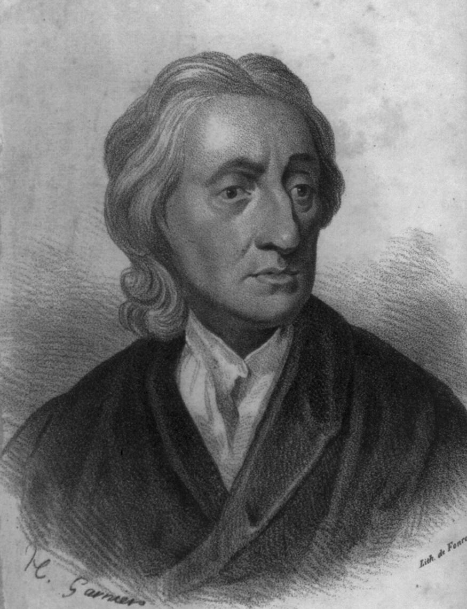
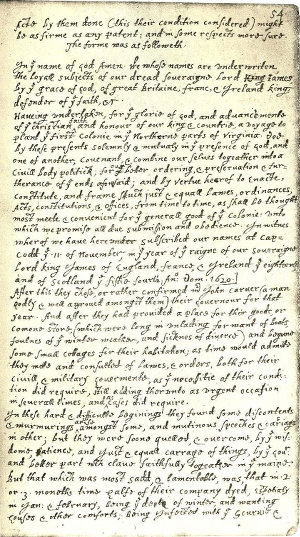
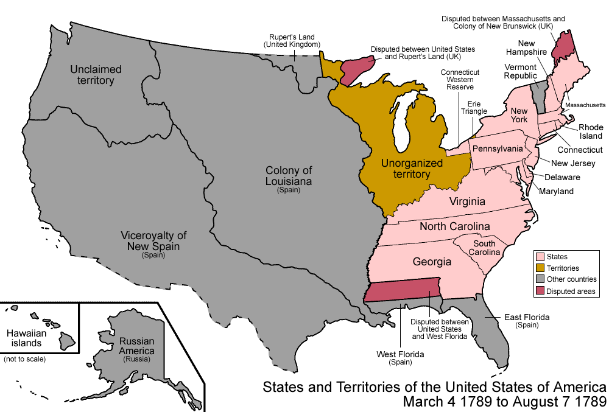

The Founding Era and the Constitution
Dr. Christopher N. Lawrence
Middle Georgia State University
POLS 1101: American Government
Inherited Political Traditions
Governing Principles:
Government arises from the consent of the governed.
Power should be divided among separate institutions.
Citizens' rights must be protected.
Consent of the Governed
Thomas Hobbes, The Leviathan (1651).

Without government, in the “state of nature,” life would be “solitary, poor, nasty, brutish, and short.”
Hence people formed a social contract.
Hobbes was a monarchist, not a republican.
Separation of Powers
John Locke's Second Treatise on Government (1690)
Also based on consent of the governed, although people did not give up their natural rights
But no need to concentrate power in one ruler
Legislative power
Executive power
Baron de Montesquieu, in The Spirit of the Laws (1748), later added judicial power as well.
Natural Rights
-

Locke also argued government should protect individuals' natural rights to “life, liberty, and property.”
Revolution might be justified if government failed to secure those rights.
Taxation without Representation
Colonists were asked to help with cost of keeping troops in colonies after the French and Indian War (also known as the Seven Years' War in Europe).
1765, imposition of the Stamp Tax on the colonies:
Already in use in Britain, where taxes were higher than in the colonies
Colonists had never paid a direct tax, had no voice.
Believed this violated the spirit of the Magna Carta: the principle that the people's representatives had to approve of taxes and spending.
The Experience of Self-Government
-

Colonial legislatures dated back to Virginia's House of Burgesses in 1619.
Plymouth colonists agreed to the Mayflower Compact in 1620.
Distance from imperial government meant colonists effectively ran their own affairs most of the time; governors often “went native” too.
The War for Independence
Colonists' resentment of British taxation culminated in open conflict at Lexington and Concord in 1775.
Second Continental Congress met in Philadelphia; efforts to broker compromise unsuccessful.
Thomas Jefferson built on Locke's ideas in drafting the Declaration of Independence, approved on July 4, 1776.
War officially ended with the Treaty of Paris (1783).
The Articles of Confederation
“Firm league of friendship”—each state saw itself as independent and sovereign.
Continental Congress was granted limited powers:
Could not tax directly; requested contributions to national budget from the states instead.
Could declare war, but not raise an army directly.
Could coin money; but could not stop states from doing so as well.
States could tax imports and exports to other states.
Supermajority (2/3) required to take most actions; unanimity required to alter Articles.
Threats to a New Nation
U.S. had won the war with Britain, but British colonies remained nearby.
Spain and France retained colonies to the west and south.
British had previously managed relations with Native Americans.
American shipping was no longer protected from piracy by Britain's navy.
Internal dissatisfaction.
Threats to a New Nation
Toward the Constitution
Preceded by the Annapolis Convention in 1786:
Only five states were represented.
Recognized need for reform; called on states to send delegates to a convention in 1787.
Shays' Rebellion (1786–87) made additional states realize need to improve on the Articles.
The Constitutional Convention (1787)
In 1787, more delegates came to Philadelphia to consider reforms.
Initial purpose: revise the Articles.
Most states favored some revisions.
Rhode Island the exception.
Individuals in opposition stayed away: notably, Patrick Henry.
Ten delegates abandoned convention; another three refused to sign.
The Constitutional Convention
The Virginia Plan (proposed by Madison and Randolph) had support of more populous states.
System would be dominated by the national Congress.
Called for representation in Congress based on states' population or wealth.
Less populous states feared they would be dominated by Virginia and New York.
The Constitutional Convention
Delegates from smaller states favored the New Jersey Plan instead:
Three branches with different powers.
Kept one chamber of Congress with each state having one vote.
Did not grant Congress broad powers
Instead, Congress had a limited number of enumerated powers.
The Connecticut Compromise
A majority of states supported the Virginia Plan.
Small states considered leaving and thus ending the convention.
Committee appointed to resolve the issue.
Solution: split the difference with a bicameral legislature.
Big states: House seats based on population.
Small states: equal seats per state in the Senate.
Tariffs and Trade
Northern states favored taxes on imports and exports to protect domestic industry, raise money; opposed the slave trade.
Southern states opposed trade tariffs, particularly on exports; favored continuation of slave trade.
Compromise: no export tariffs, but national government could tax imports; slave trade permitted until at least 1808.
Representation and Taxation
Direct taxes were to be apportioned based on population.
Northern states favored counting everyone for taxation but only non-slaves for representation.
Southern states favored the opposite.
Solution: the three-fifths compromise. Equalized representation between the agrarian south and commercial north.
Constitutional Compromises
Using vague language
The “necessary and proper” or “elastic” clause.
Judicial review.
The supremacy clause.
Leaving decisions to the states:
Voting qualifications.
The Electoral College.
A Stronger, More Flexible Government
Congress could now levy taxes.
Congress regulates interstate, international trade.
Only national government can mint coinage.
Independent executive and judicial branches.
Congress can act with simple majorities, subject to veto.
Amending the Constitution
Congress can propose amendments (by two-thirds majority in both chambers), or 2/3 of states can request a constitutional convention.
Constitutional amendments require 3/4 of states to agree; can be ratified by either:
state legislatures.
special ratifying conventions.
Ratifying the Constitution
In 1787 and 1788, voters chose delegates to ratification conventions in each of the 13 states.
Federalist Papers (Hamilton, Madison, Jay)
Campaigned for ratification of the Constitution.
Anti-Federalists (including Patrick Henry)
Opposed the Constitution; thought it centralized power too much.
The First National Elections
Federalists won by persuading 11 of the 13 states to ratify the Constitution:
Several states only agreed after Federalists agreed to propose a Bill of Rights, against Hamilton and Madison's original wishes.
March–April 1789: Washington takes office as president, new Congress begins operations.
Criticisms of the Constitution
Secretive, unseemly process.
Did not work within existing legal framework to amend Articles of Confederation.
Powers of the President and courts poorly defined.
The Electoral College.
Did not guarantee basic liberties in the states.
Shortfalls related to the need for ratification:
Slavery and the right to vote.
Needed to win support of white, male, propertied population.
Achievements of the Constitution
Created unified nation capable of defending itself.
Facilitated the country’s economic development:
Outlawed separate state currencies.
Outlawed state tariffs.
Created flexible, enduring institutions.
Copyright and License
The text and narration of these slides are an original, creative work, Copyright © 2000–15 Christopher N. Lawrence. You may freely use, modify, and redistribute this slideshow under the terms of the Creative Commons Attribution-Share Alike 4.0 International license. To view a copy of this license, visit http://creativecommons.org/licenses/by-sa/4.0/ or send a letter to Creative Commons, 444 Castro Street, Suite 900, Mountain View, California, 94041, USA.
Other elements of these slides are either in the public domain (either originally or due to lapse in copyright), are U.S. government works not subject to copyright, or were licensed under the Creative Commons Attribution-Share Alike license (or a less restrictive license, the Creative Commons Attribution license) by their original creator.
Works Consulted
The following sources were consulted or used in the production of one or more of these slideshows, in addition to various primary source materials generally cited in-place or otherwise obvious from context throughout; previous editions of these works may have also been used. Any errors or omissions remain the sole responsibility of the author.
- Barbour, Christine and Gerald C. Wright. 2012. Keeping the Republic: Power and Citizenship in American Politics, Brief 4th Edition. Washington: CQ Press.
- Coleman, John J., Kenneth M. Goldstein, and William G. Howell. 2012. Cause and Consequence in American Politics. New York: Longman Pearson.
- Fiorina, Morris P., Paul E. Peterson, Bertram D. Johnson, and William G. Mayer. 2011. America's New Democracy, 6th Edition. New York: Longman Pearson.
- O'Connor, Karen, Larry J. Sabato, and Alixandra B. Yanus. 2013. American Government: Roots and Reform, 12th Edition. New York: Pearson.
- Sidlow, Edward I. and Beth Henschen. 2013. GOVT, 4th Edition. New York: Cengage Learning.
- The American National Election Studies.
- Various Wikimedia projects, including the Wikimedia Commons, Wikipedia, and Wikisource.